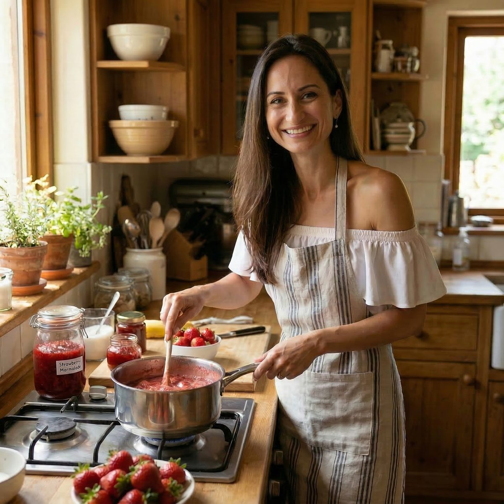
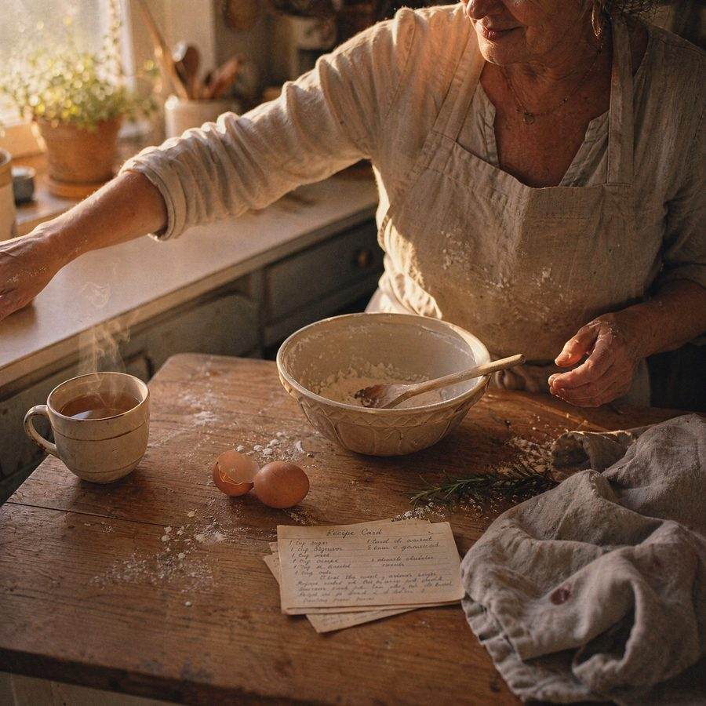
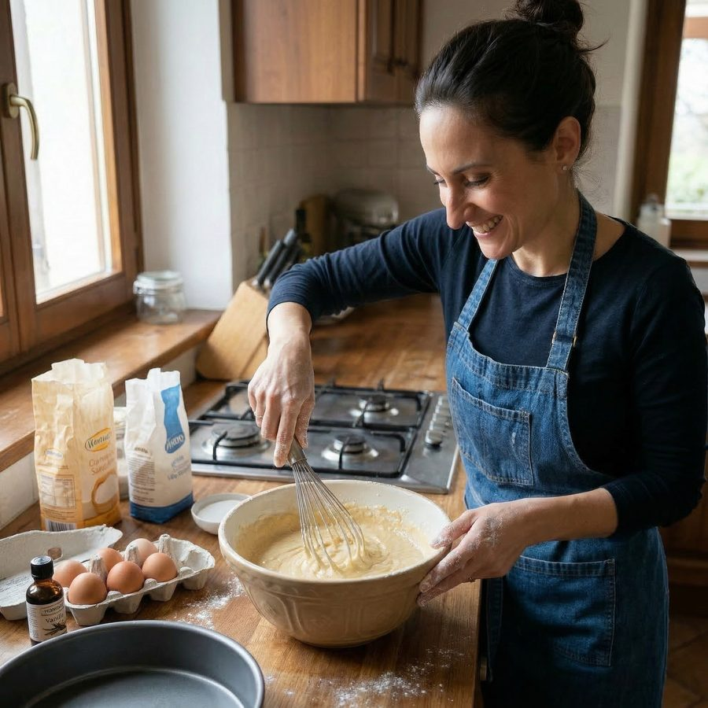

The origin
A small story about a Sunday, twenty-four cookies, and the question that started everything.

My grandmother taught me to bake. Patience, butter, citrus peel, time. Recipes that didn't come from books. They came from her hands, and from her mother's hands before that.
She is no longer here. But on Sunday mornings, when my kitchen fills with the smell of orange and warm sugar, she still is. Just a little.
I live alone in Zürich. For years I baked the way she taught me. Out of love, out of habit, out of memory. And every Sunday, most of what I made sat on the counter until it went stale.
I started talking to people in Zürich. Friends. Colleagues. Neighbours. Strangers in cafés. I expected to learn that my Sunday problem was a small private thing.
It wasn't. It was everywhere.
A grandmother making börek every Friday for thirty years, giving most of it to neighbours who never asked for it. A father baking sourdough for twelve when only three would eat it. A woman who moved here from Lebanon making her mother's maamoul, freezing what she couldn't share.
We were all doing the same thing. Baking from love, alone, throwing away what wouldn't fit.


Restaurants make first and hope someone wants it. Supermarkets stock first and write off what doesn't sell. Apps like Too Good To Go exist to rescue what was already over-produced.
What if we did the opposite. What if nothing was made until someone asked for it.
solo.quando is a platform where homemade food is made only when you want it. Where the grandmother knows exactly how many börek to bake on Friday, because her neighbours already said yes. Where the Lebanese maamoul finds the people who have never tasted it but want to. Where a recipe written in a notebook in 1962 does not go quiet when the person who wrote it does.
Who this is for
The grandmother whose recipes shouldn't be lost. The immigrant whose food doesn't appear on any Swiss shelf. The home-bound maker whose kitchen is their best asset. The weekend baker who already has the people, just doesn't know it yet.
And for everyone else. The neighbours who would rather wait three days for something made by hand than buy something made by no one.
Our promise
Where culture moves slowly across kitchen counters. Where nothing is made until you ask for it. Where less goes to waste, and more goes to belonging.
Join the waiting list. We'll write when we're ready in your neighbourhood.